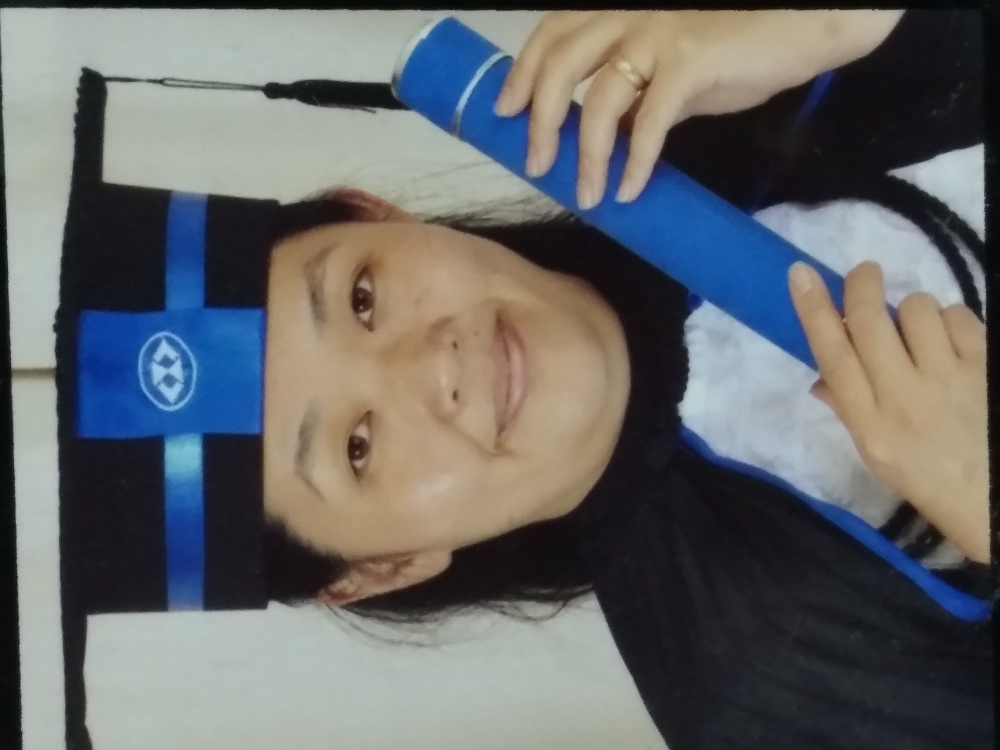

Formação acadêmica
Formada em:
- MBA em Liderança e Gestão Estratégica, pela FGV - 2021;
- Pós Graduação em Gestão de Pessoas, pela Facel - 2018;
- Graduação em Administração, pela UCB - 2016.
Idiomas:
- Básico de Inglês;
- Básico de Japonês.
Atualmente, estou cursando Tecnólogo em Análise e Desenvolvimento de Sistemas pela Uninter - com previsão de conclusão 07/2023 e estou complementando os estudos, com cursos da Alura - já realizei 294 horas de cursos, das áreas de Programação, Front-end, UX & Design, Data Science e Inovação & Gestão.
Finalizei 37 cursos da Alura, com os certificados de conclusão em anexo: Certificados Alura
Amo aprender, busco o conhecimento para colocá-lo em prática, seja na vida profissional ou pessoal - para agregar valor e melhoria contínua.
A gestão, inovação e a tecnologia tem sido alicerces para a atualização constante e aprimoramento das capacidades técnicas e comportamentais, a fim de se sobressair no mercado de trabalho. O aprendizado é diário, saindo na frente quem se dedica e faz mudanças, sendo flexível na forma de aprender e trabalhar.
Meus próximos passos é realizar o curso de Pós Graduação de "Ciência de Dados e Inteligência Artificial", na Uninter e finalizar a trilha de Front-end da Alura.
No vídeo abaixo, a Alura explica o que é Data Science, de forma simples e motivadora. A didática é excelente, sendo indicada para todos os níveis de conhecimento. Vale a pena assistir e se motivar para aprender, com exemplos práticos.